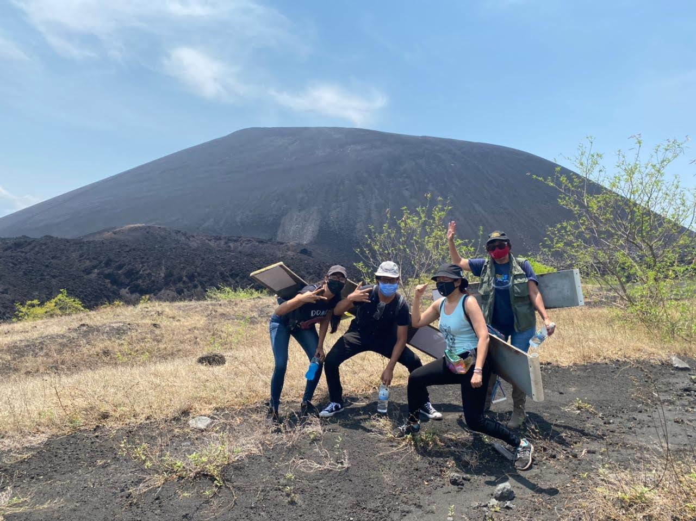
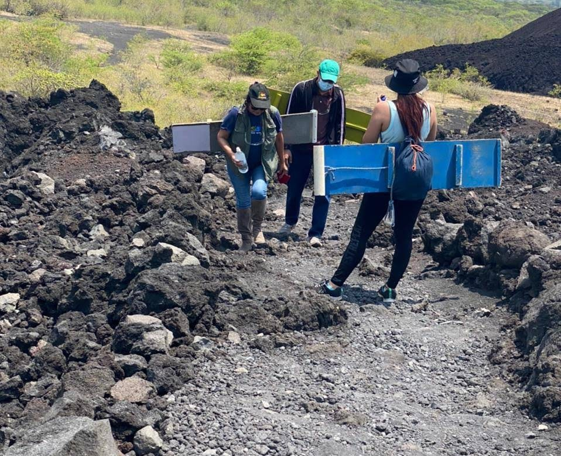

Ready to Climb?
Quick notes before riding down "Cerro Negro" (Nicaragua): what you get, the hike, and how the ride works.


Kit you receive
- Protective suit (thick fabric) to cover your clothes.
- Goggles (lab-style) to protect your eyes from ash and wind.
- Board (you sit on it; not a surfboard).
- Two ropes (mecates) to hold: pull for more speed, ease to slow down.
- Bring/pack: gloves and your small backpack.
The hike up
- Distance to the summit: 1.5 km over ash and gravel.
- Time: about 1 hour with breaks.
- You carry your own board and the pack (suit, gloves, goggles).
- Be careful near the rim. Wind can push, and ash can slide.
How the ride works
- Sit, feet forward, both hands on the ropes.
- More speed: lean back a bit and pull the ropes in.
- Less speed: lean forward and drag your heels lightly.
- Its steep braking is hard; control comes from posture and the timing.